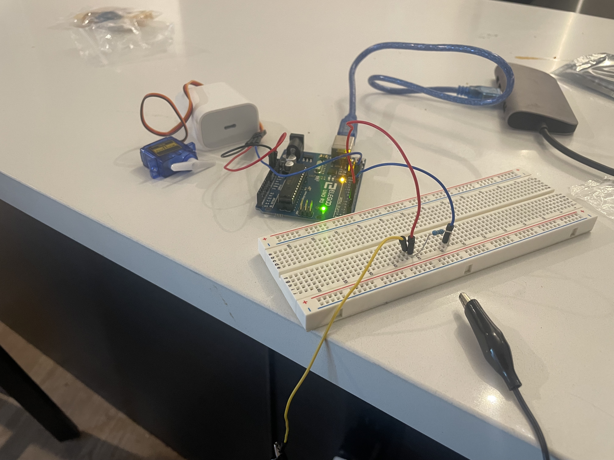

Here is the schematic for my circuit. I chose 1M ohm resistor for capacitive sensinh since, we require current to flow from pin 2 at very small rate. Pin 4 will allow to take ghe number of outputs required. Using the ouputs from capacitive sensing, we can enter the value for our servo motor which is connected to a 5V power supply, ground, and ardruino pin 9.
This is my actual circuit on the breadboard. I used a 1M ohm resistor, a servo motor, and wired connections from my ardruino board.
//Including both capacitive sensor and servo libraries
#include
#include
Servo myServo;
CapacitiveSensor cs_4_2 = CapacitiveSensor(4,2); // 1 megohm resistor between pins 4 & 2, pin 2 is sensor pin, add wire, metal thing
void setup(){
myServo.attach(9); // attaches the servo on pin 9 to the servo object
cs_4_2.set_CS_AutocaL_Millis(0xFFFFFFFF); // turn off autocalibrate on channel 1 - just as an example
Serial.begin(9600);
}
void loop()
{
long start = millis();
long total1 = cs_4_2.capacitiveSensor(30);
Serial.print(millis() - start); // check on performance in milliseconds
Serial.print("\t"); // tab character for debug window spacing
Serial.println(total1); // print sensor output 1
delay(10); // arbitrary delay to limit data to serial port
int val = map(total1, 0, 1023, 0, 180); // maps the read value from capacitor sensing to 0-180 for the servo
myServo.write(val);
delay(200); // wait for the servo to get there
}
Here is an animated gif showing the operation of my circuit.
Answers to additional questions:

//Create a variable x
If random(100) == 20 // chances of this are 1/100 which is 1%
x is an errenous reading
Else x = analogRead(inputPin)
//Create a variable x and take the reading
x = analogRead(inputPin)
//Now create another variable err_noise as
err_noise = random (-0.1*x, 0.1*x) // this generates any random value which is +10% or -10% of our error
now add this error margin to our original reading x
x+= err_noise